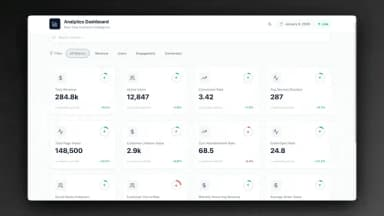

用了 Taskade 两年才发现，这 5 个冷门设置我竟然一直没碰
从 Test Trigger 调试开关到 Draft 状态自动回落，从九视图数据联动到系统托盘快捷捕获——Taskade 藏得最深的那些功能，以及哪些坑别踩。
你以为它只是个任务清单？其实它还藏着……
我用 Taskade 快两年了——最初是从 Taskade官网 了解到的。说实话，大部分时间只把它当一个「比 Todoist 多了点花样」的在线清单——List 视图列任务、勾完成、加个截止日期，完事。Board 看板偶尔开开也算用过了，Table 数据库那种对我来说太像 Notion，我干脆就没碰。
直到上个月为了排查一个跑不起来的 Automation，我把设置菜单从头到尾翻了一遍，才发现：我之前只开发了它 20% 的能力。剩下 80% 里藏着一堆官方不怎么宣传、但真省时间的东西。下面这五个，是我挖到最值得分享的。
一、Automations 里有个官方不宣传的「Test Trigger」按钮
如果你没玩过 Taskade 的 Automations，跳过这一节也行——它是付费功能，而且确实需要点耐心配置。但玩过的人十有八九会遇到「触发器明明条件写对了，但就是不触发」的情况，然后反复改条件、手动跑、看日志，来回折腾半小时。
解决办法藏在每个触发器配置面板的角落里，叫 Test Trigger。点一下，系统会喂一条模拟数据触发这个 Automation，然后把「触发器传给后续步骤的真实变量」直接打印出来。
你猜我之前怎么调的？手动跑，然后在 Run History 里翻 Failed 记录，点开看错误信息里有没有变量名。效率差远了。
为什么这个按钮这么重要？因为 Automations 里引用变量的格式是 {{action_name.field_name}}，但触发器传来的字段名和你以为的经常不一样。比如你在 Project 里建了个叫"客户公司"的字段，条件里写的是 {{trigger.客户公司}}，但 Test Trigger 一跑才发现真实传过来的是 {{trigger.company_name}}——字段名从中文被自动转成了下划线风格。
官方文档没提这个细节，还是后来去 taskade文档 翻了一下才确认字段名从中文自动转下划线的规则。我就是靠 Test Trigger 把一个 CRM 同步的 Automation 从跑不通调通的，前后改了三个变量名。
什么人用得上：写 Automations 的创作者、想把重复工作自动化的团队负责人。什么人可以无视：只手动管清单的个人用户。

二、九种视图不是九个独立模板，是同一份数据的九个视角
这个其实是 Taskade 最核心的设计理念，但我用了一年多才真正理解。
我以前总觉得 List、Board、Table 是三个不同的 Project，因为它们长得完全不一样。但某天我在 Board 里给一张卡片加了个自定义字段，切到 Table 视图一看——那个字段自动出现在每一行里。我又切到 Calendar，带截止日期的卡片全落到了对应日期的格子里。
一套数据，九个视图。这意味着什么？
你可以在 Table 里批量改 50 条任务的负责人（Actionsheet 付费视图干这个更爽），Board 里的每张卡片立刻就更新了；你在 Calendar 里拖任务改截止日期，Gantt Chart 的时间线也跟着动；你在 Mind Map 里发散功能点，写完直接切回 Board 就成了 To Do 列的卡片。
还有个细节：每个 Project 可以同时开多个视图标签页。比如一个 Tab 固定 Board 做日常工作流，另一个 Tab 固定 Table 专门批量编辑数据。切换不丢上下文，因为它们看的是同一份东西。
我后来再也不纠结「该用哪个视图」了——先用最顺手的那个干活，需要换角度理解的时候直接切。这个"不纠结"本身就是个解锁。
三、桌面端的系统托盘 + 全局快捷键，以及浏览器扩展的 Quick Add
Taskade 跨七个平台，但我敢说绝大多数人只用网页版或 iOS/Android App。其实桌面端和浏览器扩展的组合藏着一个超实用的捕获链路——任何页面看到想收集的内容，直接用快捷键扔到 Taskade 里。
Windows 桌面端：安装后系统托盘常驻，右键可以快速查看今日任务或添加新项。全局快捷键是 Ctrl+Shift+A，任何应用里按下就弹出一个小框让你输入，回车就存进默认 Project。
macOS 桌面端：支持 Touch Bar 快捷操作，还集成了 Apple Shortcuts——可以用 Siri 语音创建任务，说"下周一下午三点提醒我开会"，Taskade 自动解析时间和内容。
Linux：AppImage 从 官方下载 后即用，不需要安装，给执行权限后直接跑。Wayland 环境下有键盘快捷键失效的小坑，可以切 X11 会话或临时用网页版。
浏览器扩展（Chrome/Edge/Firefox）：装了之后每个新标签页直接变成 Taskade 工作台——不是侧边栏那种小面板，是完整的视图。从任何网页选中文字，用 Quick Add 快捷键一键收进 Taskade，还支持浏览器登录自动同步桌面端的会话。
这个扩展我装了三个月才发现它不止是个书签——它是 Taskade 在浏览器里的常驻入口，比网页版好用多了。
四、Automations 的 Draft 状态和 Queue 积压，两个容易踩的坑
Automations 还有两个藏得很深的机制，知道了能省不少排查时间。
第一个是 Draft 状态。新建的 Automation 默认是 Draft，不运行。改完任何配置——哪怕只是换了一个字段的值——它也会自动回到 Draft，需要你手动切到 Active 才会重新跑。我之前就犯过这个错：调好了一个同步 Gmail 到 Taskade 的 Automation，跑通了，后来加了个条件分支，忘记切回 Active，等了一周发现 Gmail 里的新邮件一条都没进来，还以为是集成坏了。
第二个是 Queue 积压。Taskade 的 Automations 有队列机制，正常延迟几秒到一分钟内。但如果你的多个 Automation 都设了"每天 9:00"触发，它们会同时排队，后面的可能要等好几分钟才能开始跑。如果这个问题持续出现，把部分定时任务的执行时间错开几分钟就行。
还有个更隐蔽的：如果一个 Automation 短时间内触发了大量失败（比如条件分支写错导致无限循环），Taskade 会自动临时暂停它，防止无限消耗 Credits。暂停后不会跑，也不会报错，你得手动到设置里恢复。官方说这是保护机制，但没说清楚触发阈值，我那个无限循环的 Automation 被暂停时还以为是 Credits 用完了，查了半天才找到。
五、Active Sessions 一键退出 + Automation JSON 备份，安全层面的两个开关
这两个不在主流功能介绍里，但对重度用户来说太重要了。
Active Sessions 在 Settings 里，可以看到所有登录过 Taskade 的设备和浏览器。点一下"退出所有其他设备"，所有其他会话直接被踢掉——换手机、怀疑被盗、或者公司的旧电脑忘了登出，这个按钮是救命的。我上次出差用酒店电脑登了一下，回来忘了关，两周后在 Active Sessions 里看到那个 Chrome 会话还挂着，直接一键退出。
Automation JSON 备份：每个 Automation 右上角的 ⋯ 菜单里有个 Export，导出成 JSON 配置文件。我之前只以为这是备份，后来发现它能直接在另一个 Workspace 里导入——相当于跨团队复制一个工作流。而且修改前先导一份，改坏了直接回滚，比手动重配快多了。
顺便说一下数据导出这块：Projects 能导 PDF、Markdown、CSV、JSON，Agent 的 System Prompt 和知识库来源也能导，Enterprise 甚至能完整导出整个 Workspace。Taskade 不锁数据这件事，比很多同类工具做得都彻底。
最后想说的
我写这篇文章的时候，其实是想给那些和我一样"用了半年还停留在基础功能"的人提个醒——Taskade 这些隐藏功能不是给技术极客设计的，而是给那些想把重复工作自动化、想在不同设备间无缝切换、或者只是想更高效地管理信息的普通用户准备的。
别再纠结"该用哪个视图"了，别再手动搬数据了，把 Draft 状态记住，把 Active Sessions 定期查一查——把它用透，比换个新工具划算多了。
如果想要更详细的操作步骤和完整功能清单，我整理的资料在 GitHub、Gitee、GitCode 三个仓库都能找到，选哪个看你平时用哪个平台顺手。